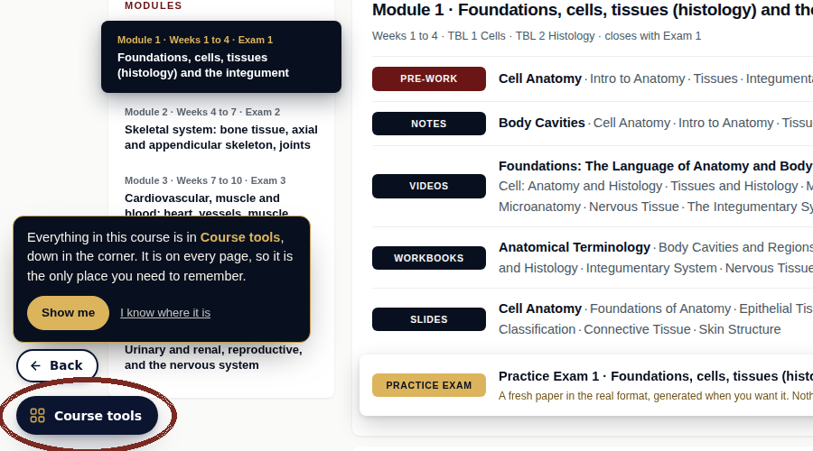
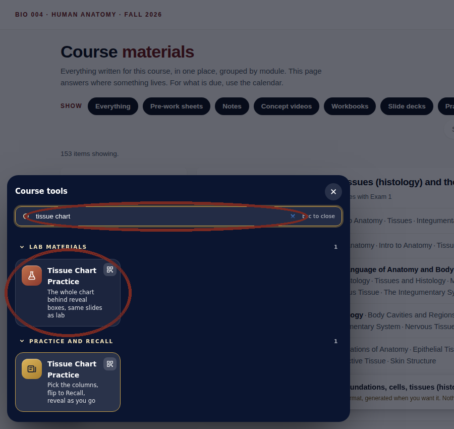
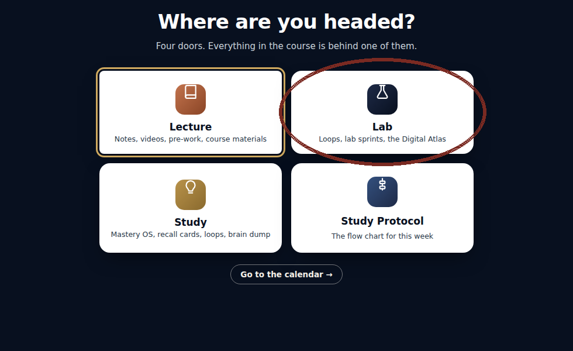
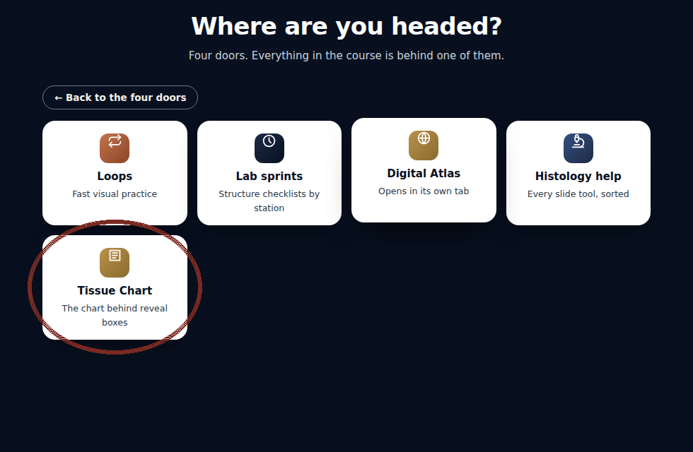

BIO 004 · Human Anatomy · Fall 2026
If you are studying for the tissue portion of the lab exam, there is a new tool in the course: Tissue Chart Practice.
One thing before you open it. The chart works best AFTER you have built your own. Steps 1 and 2 of the Study Protocol come first: make your own tissue chart on paper, one row per tissue, then recall it from memory. Building the chart is where most of the learning happens. This tool is for drilling once your own chart exists.
Every tissue from lab is in one chart with its slide picture, what it looks like, location, function, and the special structures with what they do. The checkboxes let you choose which columns to include, so you can work with exactly the chart you want. When you are ready to test yourself, flip the switch from Read to Recall and every answer hides behind a reveal box. Say the answer out loud, or type your own description from memory, then reveal and check yourself. There is also a one at a time mode that gives you one large slide image with all its answers hidden beside it, and you can move through the tissues in random order. Click any picture to see it full screen.
No direct link here on purpose. Everything in this course lives behind Course tools and the four doors, and knowing your way around them is worth more than any one link. Use either path below; after twice it will take you five seconds.
Way 1: Course tools. On any course page, click the Course tools button in the bottom left corner.

Type tissue chart in the search box and the tool appears. It lives under Lab materials and under Practice and recall; either one opens the same page.

Way 2: the four doors. When the Where are you headed screen comes up in Canvas, choose Lab.

Then click Tissue Chart. It is in the Study door too.

Simple squamous is in the chart twice on purpose, because it looks different in the alveoli than in Bowman's capsule, and the exam can show either. And revealing an answer you have not tried to recall first does nothing for you. The struggle to remember before the reveal is the part that makes it stick.
This is one way to study, not the only way. If a different approach is working for you, keep it, or take what is useful here and modify it to fit how you learn.